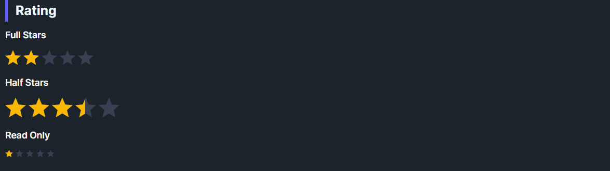

DaisyRating is a star rating control built on RangeBase. It supports precision modes (full/half/0.1), 3 size presets, and respects Minimum/Maximum/Value (default 0–5).
Filled stars are clipped based on Value to show partial ratings; clicking updates the value unless IsReadOnly is set.
| Mode | Snapping |
|---|---|
| Full (default) | Whole stars (1, 2, 3…). |
| Half | 0.5 increments. |
| Precise | 0.1 increments. |
| Size | Star Size | Use Case |
|---|---|---|
| ExtraSmall | 12px | Dense tables/toolbars. |
| Small | 16px | Compact cards/forms. |
| Medium (default) | 24px | General usage. |
| Large | 32px | Hero ratings or touch-friendly UIs. |
| ExtraLarge | Falls back to Medium styling (no explicit theme overrides). |
<!-- Basic -->
<controls:DaisyRating Value="2.5" />
<!-- Large, whole-star only -->
<controls:DaisyRating Value="4" Size="Large" Precision="Full" />
<!-- Read-only display -->
<controls:DaisyRating Value="4.5" IsReadOnly="True" />DaisyRating includes built-in accessibility for screen readers via the AccessibleText property. The automation peer automatically announces the current star count (e.g., "Rating: 3 of 5 stars").
| Property | Type | Default | Description |
|---|---|---|---|
AccessibleText |
string |
"Rating" |
Context text announced by screen readers (e.g., "Product rating: 4 of 5 stars"). |
The automation peer formats the announcement based on the current value and precision:
<!-- Default: announces "Rating: 3 of 5 stars" -->
<controls:DaisyRating Value="3" />
<!-- Contextual: announces "Product rating: 4 of 5 stars" -->
<controls:DaisyRating Value="4" AccessibleText="Product rating" />
<!-- Half precision: announces "Movie rating: 4.5 of 5 stars" -->
<controls:DaisyRating Value="4.5" Precision="Half" AccessibleText="Movie rating" />
<!-- Read-only with context: announces "Average user rating: 3 of 5 stars" -->
<controls:DaisyRating Value="3" IsReadOnly="True" AccessibleText="Average user rating" />Maximum to the number of stars (default 5); Value is clipped within Minimum/Maximum.Precision="Half" for UX parity with common review widgets; Precise for finer sliders.IsReadOnly=True but still show the clipped fill.AccessibleText to provide context (e.g., "Product rating" or "Your review"); the star count is automatically appended.